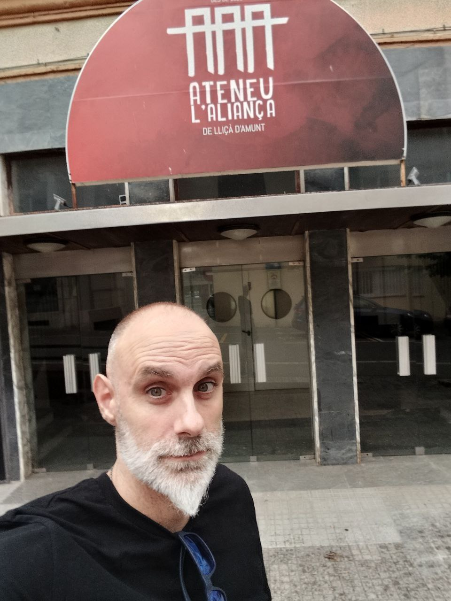

DIA: Sabado 14 de Septiembre del 2024.
HORA: de 10.00 a 12.00 de la mañana.
LUGAR: teatre ATENEU l' ALIANÇA - Lliçà d' Amunt

VEN y PARTICIPA en mi VIDEOCLIP del tema ME VOY A LEVANTAR.
Mensaje de Superación, Ánimo y Fuerza.
Este videoclip usaremos su estreno para colaborar con ONCOVALLÈS - Contra el CANCER
¡Tu participación puede cambiar vidas!
Únete a Nuestro Grupo de WhatsApp para saber detalles
Preguntas Frecuentes
¿Necesito alguna vestimenta específica?
Simplemente ropa para cocierto/festiva y si puedes traer otra camiseta de otro color para simular que somo más personas de las que somos ;)
¿Dónde y cuándo se grabará el videoclip?
DIA: Sabado 14 de Septiembre del 2024.
HORA: de 10.00 a 12.00 de la mañana.
LUGAR: teatre ATENEU l' ALIANÇA - Lliçà d' Amunt
¿Cómo se utilizarán los fondos recaudados?
1- A la hora de estrenar el videoclip, se hará a través de una web en colaboración con ONCOALLÈS para recaudar dinero
2- En cada concierto benéfico se emitirá el videoclip.
3- Se transmitirá el mesanje en medios como TV y Radio con el Videoclip parar dar ese ánimo y fuerza a la gente.
¿Cómo puedo ayudar si no puedo asistir a la grabación?
Si no puedes asistir, aún puedes ayudar difundiendo el proyecto en tus redes sociales ¡Tu ayuda es valiosa de cualquier forma!